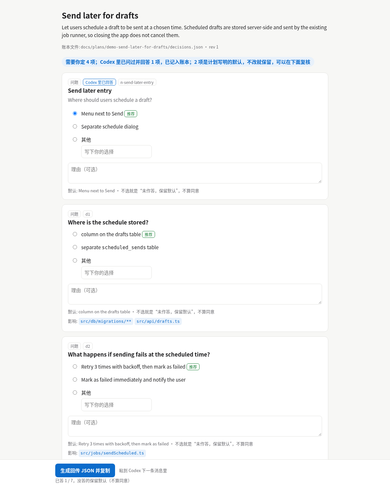
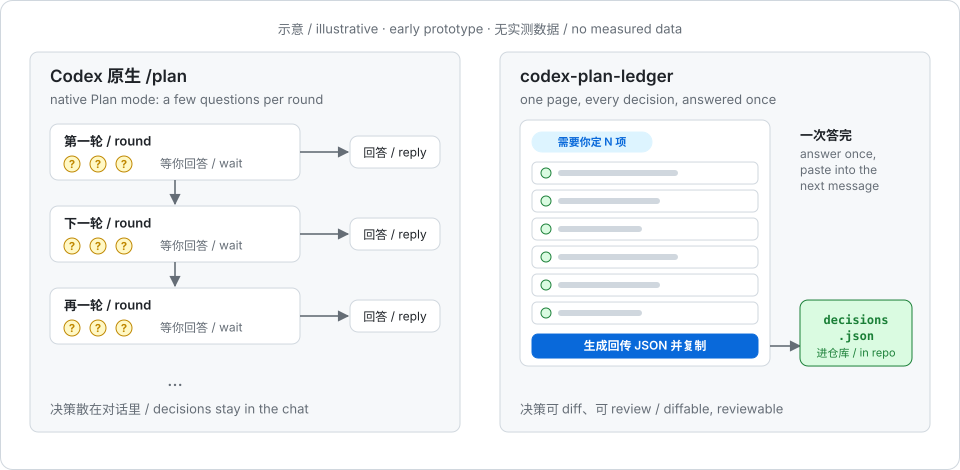
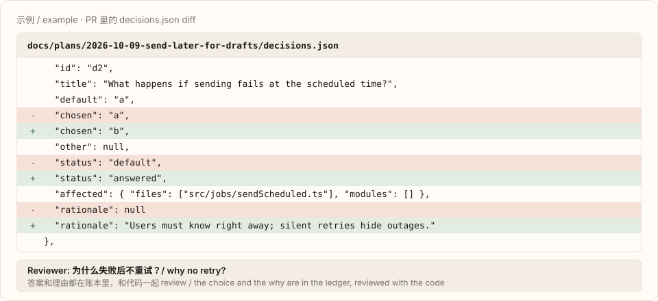

Early prototype · v0.1早期原型 · v0.1
Answer every decision in a Codex /plan on one page, and keep them in your repo.把 Codex /plan 里的决策一页答完，写进仓库。
Keep using Codex's native Plan mode. When the plan arrives, a Stop hook renders one offline HTML page with every open decision. Your answers land in docs/plans/<id>/decisions.json, reviewable in PRs, and a scope drift check compares the code change with the plan.Codex 原生 Plan 模式照常用。计划一出来，Stop hook 生成一页离线 HTML，列出所有待定决策；答案落进 docs/plans/<id>/decisions.json，能在 PR 里 review；代码写完再跑一次范围偏离检查。
npm i -g github:miniLV/codex-plan-ledger && plan-ledger init --write
One page instead of many rounds一页答完，不用一轮轮来回
Every open decision is one card: the options, the plan's recommendation, the default and the files it affects. Anything you leave empty is recorded as "not answered; default kept", not as agreement. One button builds the reply JSON to paste into your next Codex message.每项待定决策一张卡片：选项、计划里的推荐、默认值、影响的文件。不选的项记为“未作答，保留默认”，不算同意。一个按钮生成回传 JSON，粘到 Codex 的下一条消息里。
- Rendered from plain templates. No extra model calls, no network, one file.
- 纯模板渲染，不额外调用模型，不联网，单个文件。
- The hook never blocks the turn and never waits for you.
- hook 从不阻塞、从不等你。
- Answers are carried across plan revisions and marked as carried.
- 计划改版时沿用之前的回答，并标明是沿用的。


Live demo在线演示
This is the real page the hook writes, rendered from the bundled example plan (test/fixtures/send-later.message.md, synthetic). Pick some options, then press the button at the bottom to see the answers JSON. Nothing leaves your browser.这就是 hook 写出来的页面，内容来自仓库自带的示例计划（test/fixtures/send-later.message.md，合成样例）。选几个选项，再点底部按钮，就能看到回传 JSON。所有操作都只在你的浏览器里。
How it works工作流程
Hook → HTML → decisions.json → scope drift check.hook → HTML → decisions.json → 范围偏离检查。
Stop hookStop hook
When Codex outputs a
<proposed_plan>,plan-ledger hook-stopparses it (from the message, or the session transcript when the message is empty) and lets the turn end normally.Codex 给出<proposed_plan>时，plan-ledger hook-stop解析计划（从消息里取；消息为空时读会话记录），然后让这一轮正常结束。One HTML page一页 HTML
All open decisions on one offline page. Answer them in one go and copy the reply JSON into your next message.所有待定决策放在一页离线 HTML 里，一次答完，把回传 JSON 粘到下一条消息。
decisions.jsonA versioned ledger next to the code, with a JSON Schema. It shows up in the PR diff: what was chosen, and why.带版本的账本，和代码放在一起，有 JSON Schema。PR diff 里能看到选了什么、为什么。
Scope drift check范围偏离检查
plan-ledger check --base mainreports changed files outside the plan, and decisions whose files were never touched. It does not read code inside planned files.plan-ledger check --base main报出计划外被改的文件，以及该改却没碰的决策。它不读计划内文件里的代码。


decisions.json diff in a PR.示例：PR 里 decisions.json 的 diff。Status: early prototype现状：早期原型
Directional only, n = 3 pairs over two rounds. Each pair is one run of native Plan mode and one with plan-ledger on the same task (vercel/ms@2.1.3), same model and settings, questions answered by a script from a hidden oracle. This is not evidence of an effect. plan-ledger did not win on rounds in any pair (2 losses, 1 tie), and total tokens went both ways. Codex Plan mode kept asking with its built-in questions even when told to list decisions instead.
只有方向性数据，两轮共 n = 3 对。每对是同一任务（vercel/ms@2.1.3）上原生 Plan 模式和 plan-ledger 各跑 1 次，同一模型和设置，问题由脚本按隐藏的 oracle 回答。这不是效果证据。轮数上 plan-ledger 一对都没赢（输 2、平 1），总 token 有高有低。即使要求把决策列出来，Codex Plan 模式仍然先用自带的提问。
| Round / task轮 / 任务 | Rounds until final (native / plan-ledger)定稿前轮数（原生 / plan-ledger） | Planning input tokens (native / plan-ledger)计划阶段 input token（原生 / plan-ledger） | Total tokens (native / plan-ledger)总 token（原生 / plan-ledger） | Verify验收 |
|---|---|---|---|---|
| 1 / strict-option | 1 / 2 | 294,933 / 372,651 | 717,487 / 586,971 | both pass都通过 |
| 2 / strict-option | 1 / 2 | 65,931 / 83,141 | 180,208 / 205,644 | both pass都通过 |
| 2 / month-unit | 1 / 1 | 79,553 / 66,354 | 179,053 / 140,020 | both pass都通过 |
- Scope drift check, planted after implementation in the 3 plan-ledger runs: no false positive on the clean tree (3/3), unplanned new file caught (3/3), reverted planned files caught (3/3), contradicting code inside a planned file caught 0/3, as expected for v0.1.
- 范围偏离检查（3 次 plan-ledger 运行，实现后埋入）：干净时无误报（3/3），计划外新文件抓到（3/3），把计划内文件改回原样抓到（3/3），在计划内文件里写与决策相反的代码抓到 0/3，符合 v0.1 的已知局限。
- What holds up today: the decision ledger and the scope drift check. Next: make the page work with Codex's own questions instead of competing with them, then several tasks with at least 3 runs per arm.
- 目前站得住的是决策账本和范围偏离检查。下一步：让页面配合 Codex 自带的提问而不是替代它，再按多个任务、每组至少 3 次来测。
Round 1 data第 1 轮数据 · Round 2 data第 2 轮数据 · Measurement plan实测计划